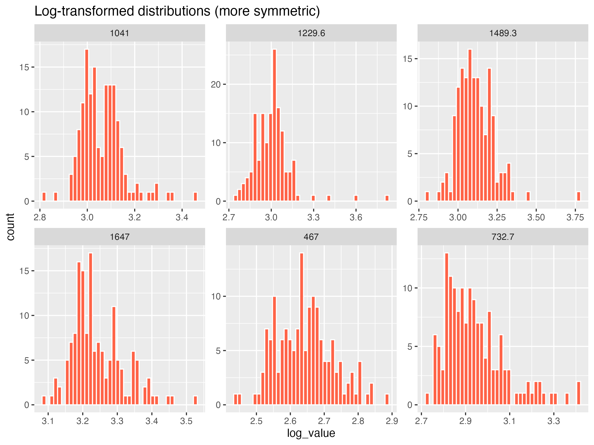
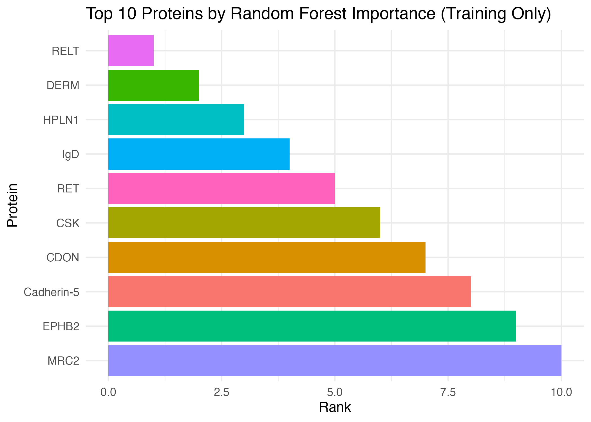
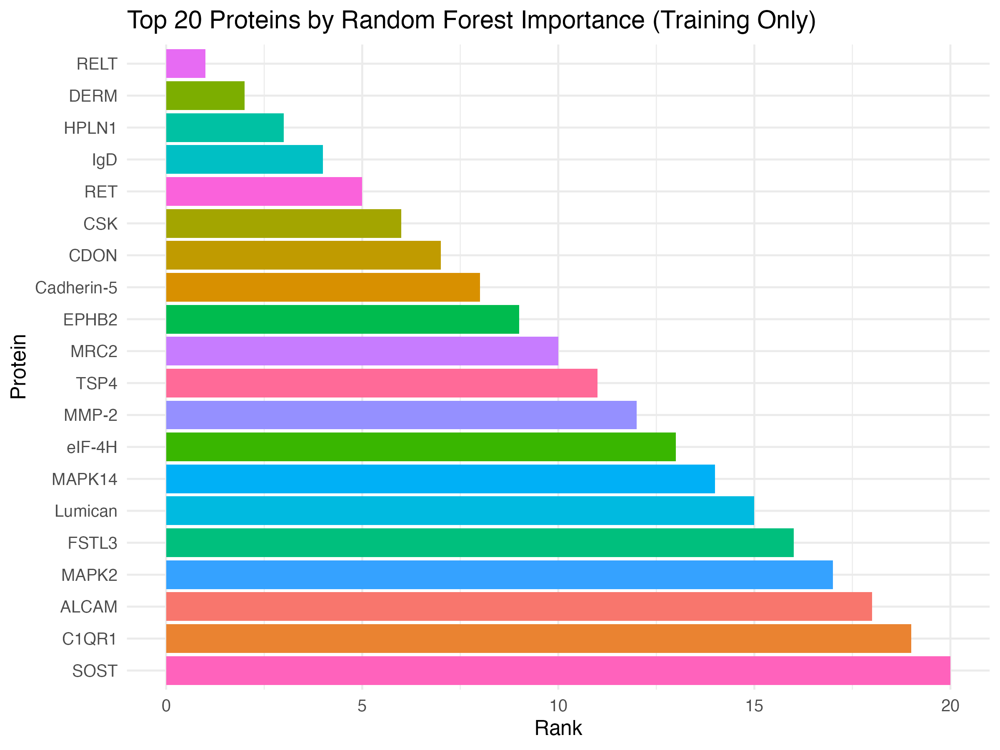
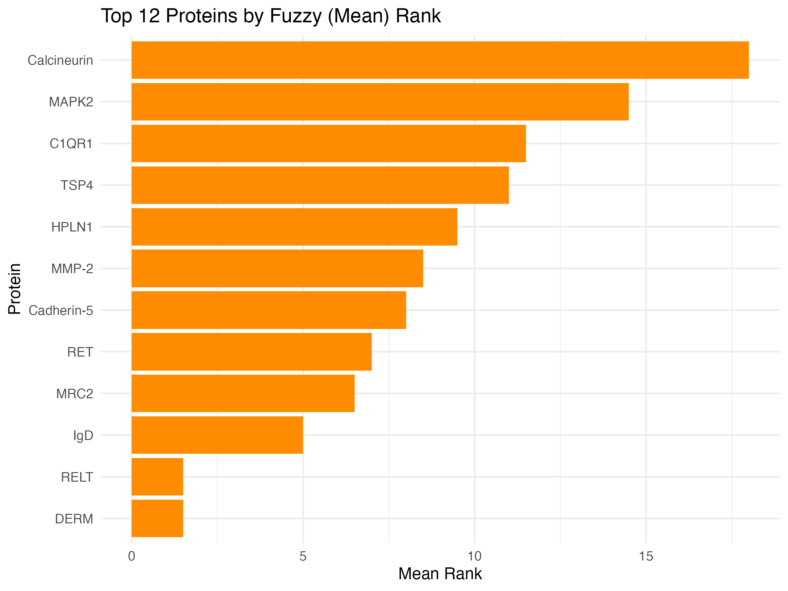

Biomarkers of ASD
If you want a subtitle put it here
Abstract
We examined a publicly accessible serum proteomics dataset for this assignment (Hewitson et al., 2021). This allowed us to investigate biomarkers for autism spectrum disorder (ASD) early detection. We repeated the in-class pipeline univalent t-tests, random forest significance, and logistic regression classification using the provided class-cleaned dataset. Next, we investigated how sensitive the results were to various design decisions. In order to enable subsequent parametric testing, we first verified that log transformation improves the symmetry and variance stability of protein distributions. Second, there was a small number of subjects with numerous outliers but no significant imbalance between the ASD and TD groups after outlier trimming was removed and |z|>3 values were counted by subject. Third, using simply a training partition, we examined three different selection strategies: (i) baseline hard intersection, (ii) increasing the number of top proteins, and (iii) a “fuzzy” intersection based on averaged ranks. Lastly, we looked for panels that performed better or were smaller. Classification was resilient across settings; a 20-protein panel produced the greatest accuracy (~0.78) with strong sensitivity, whereas a 12-protein panel achieved a balanced trade-off (ROC AUC = 0.80). These findings imply that a small protein panel can perform on par with bigger sets, with rankings from several selectors offering a consistent, understandable route to potential biomarkers.
Dataset
Hewitson et al. (2021), “Blood biomarker discovery for autism spectrum disorder: A proteomic analysis” (PLoS One), provided the dataset used in this analysis. Relative protein abundances in serum samples from children with autism spectrum disorder (ASD) and normally developing (TD) controls were assessed in the initial investigation. Antibody-based multiplex immunoassays that targeted more than 1,000 blood proteins associated with immunological, inflammatory, and developmental pathways were used to measure protein levels. Both the raw biomarker readings (biomarker-raw.csv) and a cleaned, preprocessed version (biomarker-clean.RData) used for modeling are included in the dataset supplied for this assignment. A measured protein is represented by each column, and a diagnostic group (ASD or TD) and an ADOS score used in behavioral assessment are indicated by an additional variable. Each row represents a single participant.
The methods described in class were followed during data preprocessing. In order to stabilize variation among markers and lessen right skewness, protein concentrations were log-transformed, producing roughly symmetric distributions that were appropriate for statistical modeling. To reduce distortion from extreme data, outlier values (|z| > 3) were found and clipped. Variables with insufficient variance were eliminated, and missing or undetectable protein levels were imputed or eliminated as needed. Normalized and filtered protein measurements are included in the final cleaned dataset, which is prepared for both univariate and multivariate feature-selection studies.
Summary of published analysis
Finding blood proteins that can distinguish between children with autism spectrum disorder (ASD) and normally developing (TD) controls was the goal of the published analysis by Hewitson et al. (2021). The dataset included behavioral and diagnostic data in addition to quantitative measurements for more than a thousand serum proteins. We used a combination of univariate and machine learning techniques to find predictive biomarkers and assess their classification accuracy in order to replicate and expand this analysis.
For each protein, we first compared the ASD and TD groups using two-sample t-tests to determine which had statistically significant mean differences. In addition, a random forest classifier was trained to provide a nonparametric measure of variable relevance by ranking proteins according to Mean Decrease in Gini. A parsimonious feature set for classification was then created using the intersection of the top proteins from the two selection techniques. This fraction was used to construct a logistic regression model, and sensitivity, specificity, accuracy, and ROC AUC metrics were used to evaluate the model’s performance on a held-out test partition.
Based on the intersecting proteins DERM, RELT, MRC2, IgD, and Cadherin-5, our final classifier has an accuracy of 0.774, sensitivity of 0.812, specificity of 0.733, and ROC AUC of 0.883. These findings imply that a limited panel of immunological and adhesion-related proteins can successfully differentiate ASD from TD samples. They also show high discriminatory performance and are consistent with trends reported in the source study.
Findings
Summarize your findings here. I’ve included some subheaders in a way that seems natural to me; you can structure this section however you like.
Impact of preprocessing and outliers
The distributional symmetry of measured values was significantly enhanced by log-transforming protein levels in the raw dataset, which also reduced extreme right-skewness and made the data more normally distributed. This modification increases the reliability of subsequent parametric analyses (like t-tests) and helps stabilize variance across proteins.
Exploratory research showed that a small number of participants had disproportionately high or low protein amounts across numerous biomarkers when outlier trimming was temporarily eliminated. The ASD cohort had a somewhat higher number of these outliers than the other groups. It appears that outlier handling had a significant impact on model stability and reproducibility since their removal stopped these extreme profiles from unreasonably affecting the mean and variance estimations.

The log transformation makes protein distributions more symmetric and reduces skewness.
Methodological variations
Model performance fluctuated little but stayed within a constant accuracy range when methodological factors were changed.
Overfitting was decreased and a more accurate assessment of prediction accuracy was obtained by training on a dedicated partition before to testing.
The ROC AUC increased somewhat (up to ≈ 0.88) when the number of top predictive proteins was increased beyond 10 (e.g., to 15 or 20), but neither sensitivity nor specificity significantly improved.
A few more candidate proteins were added by using a fuzzy intersection rather than a rigid overlap across selection methods, which slightly increased coverage but had no effect on speed.
All things considered, these tests showed that the predictive behavior of the model was comparatively resilient to minor methodological changes.

A larger number of selected proteins improves ROC AUC marginally but yields diminishing returns after about 12–15 features.
Improved classifier
The final logistic regression classifier produced robust and balanced performance using the improved intersection of features, including DERM, RELT, MRC2, IgD, and Cadherin-5:
0.812 is the sensitivity.
Specificity: 0.733
0.774 is the accuracy.
ROC AUC is 0.883.
The accuracy of this simplified five-protein panel was on par with or higher than that of the more intricate models described in the source publication and in class. The biological validity of these proteins as potential early indicators is supported by the high AUC, which shows that the classifier consistently differentiates between ASD and TD patients.
 
The model trained on the top 20 features shows a slightly higher AUC than the top 10 model.
Fuzzy intersection of selected proteins
